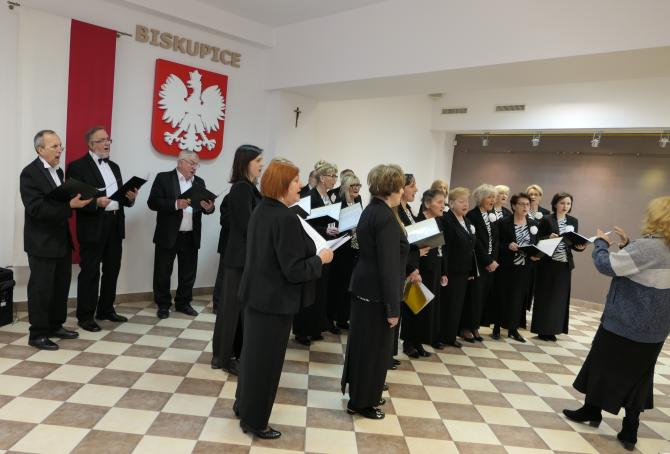
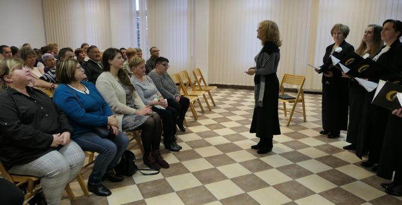
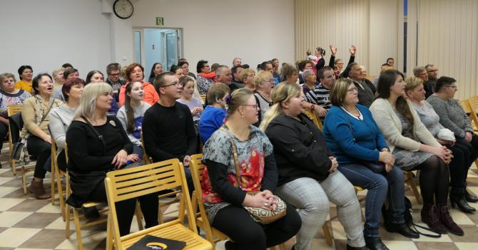
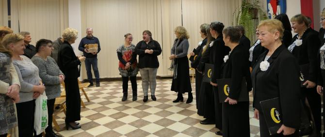
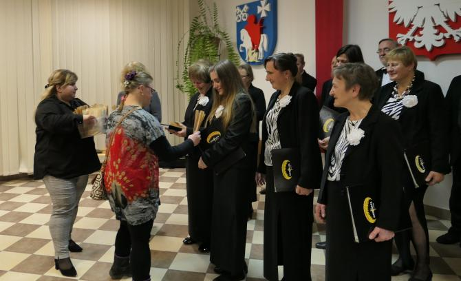
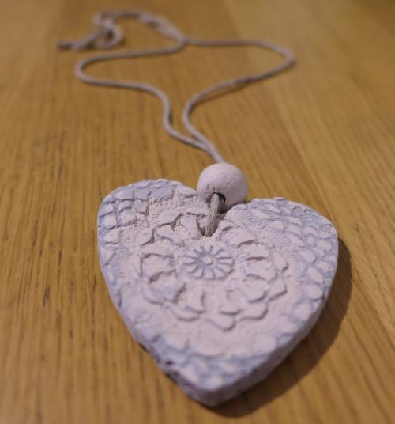

A tymczasem w Cameracie...
.
2020-01-27
Jesteśmy dzisiaj w Środowiskowym Domu Samopomocy w Tomaszkowicach z koncertem kolęd. Na początek krótka rozśpiewka.

Po krótkim powitaniu rozpoczynamy koncert

Zakończyliśmy nasz koncert… a teraz zaczynamy wspólne śpiewanie kolęd.

I na koniec wspaniałe podziękowania …
 
I własnoręcznie wykonane serduszka dla Cameraty

Bardzo dziękujemy za tak serdeczne przyjęcie.

© Stowarzyszenie Muzyczne Chór Camerata Wieliczka
Projekt i wykonanie:  Prowadzenie strony oraz zdjęcia: Małgorzata Wysocka-Cebula
Prowadzenie strony oraz zdjęcia: Małgorzata Wysocka-Cebula